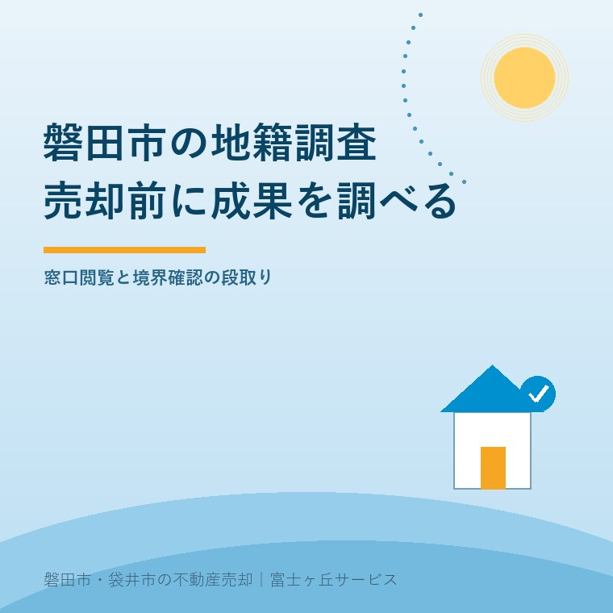
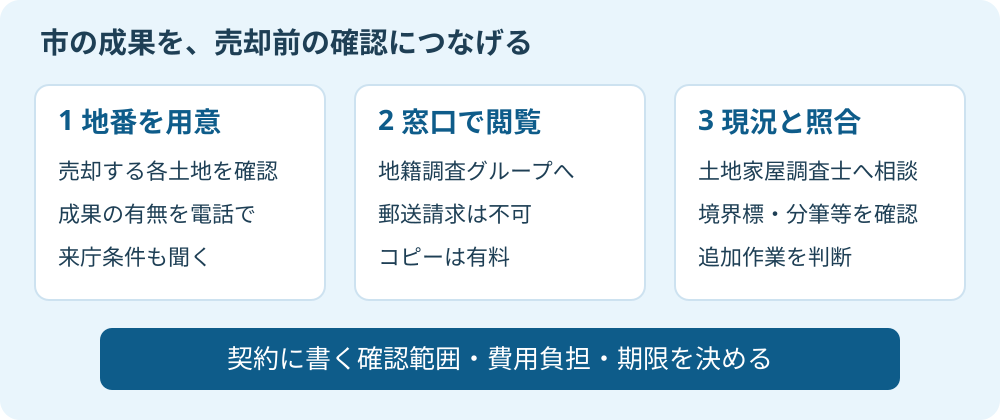

磐田市の地籍調査｜売却前に成果を調べる
2026年9月14日｜カテゴリ：磐田市・土地売却・境界

この記事の要点
Q. 土地を売る前に、市が測った図面を見せてもらえますか。
磐田市の地籍調査成果は、地番を用意して地籍調査グループへ照会し、窓口で閲覧します。郵送請求は不可、コピーは有料です。成果があっても、売買で必要な境界確認の範囲は別に決めます。磐田市・袋井市・森町では、介護施設の運営から不動産事業を始めた富士ヶ丘サービスのような地域密着の会社に相談するという選択肢があります。
土地を売ろうとすると、手元には古い公図と税金の通知書だけ。家族から「昔、市が測ったはずだ」と聞いても、図面の保管先が分からない。磐田市には地籍調査の成果を閲覧できる窓口があります。新しく測量を頼む前に、既にある資料を調べる入口です。
大石浩之（磐田市／不動産業）です。宅地建物取引士として私は、査定額の話と並行して、道路と境界の資料を確認したいと考えます。市の図面が見つかるかどうかで、次に専門家へ頼む調査の内容が変わるためです。ただし、資料があることと、そのまま売買の約束ができることは分けます。
磐田市の地籍調査は、地番を用意して窓口へ
磐田市の地籍調査成果は、農林水産課の地籍調査グループの窓口で閲覧できます。市の「地籍調査」ページは、2025年3月3日更新の案内で、郵送による請求は受け付けないと明記しています。成果のコピーには複写機使用料がかかります。
地籍調査とは、土地一筆ごとの所有者・地番・地目を調べ、境界を測量して面積を測る調査です。結果は地籍図と地籍簿にまとめられます。一筆は、登記上の土地の単位です。家の住所だけでなく、売りたい土地の所在と地番を整理して問い合わせます。
| 窓口で確認する項目 | 磐田市の案内 |
|---|---|
| 担当 | 農林水産課 地籍調査グループ |
| 場所 | 磐田市国府台3-1、市役所西庁舎1階 |
| 電話 | 0538-37-4913 |
| 受付時間 | 午前8時30分～午後5時15分 |
| 閲覧・コピー | 窓口で閲覧。郵送請求不可。コピーは有料 |
表は2026年9月14日に確認した市の公開情報です。必要書類、代理で訪ねる場合の条件、コピーの単価は、この案内だけでは確定できません。来庁前に担当窓口へ確認してください。本記事では「委任状不要」「1枚いくら」といった未確認の条件は載せません。
私なら電話で、「土地売却の準備です。所在は○○、地番は○番です。地籍調査の成果は残っていますか」と聞きます。複数の土地をまとめて売るなら、地番ごとに確認します。玄関がある一筆だけ調べて、通路や庭に当たる土地を抜かさないためです。
残っている成果を使えることが、市の仕組みの強み
磐田市が保管する地籍調査の成果は、調査時期によって種類が異なります。市の案内では、平成以降は数値法による座標面積計算書や多角点成果、昭和以前は図解法による平板測量原図などがあります。一部の区画整理事業の成果も、閲覧できるものがあります。
座標面積計算書は、点の位置を数値で表し、面積を計算した資料です。多角点成果は測量の基準となる点の資料、平板測量原図は図面を使って測った記録です。同じ「市の図面」でも情報の持ち方が違います。どの資料が残っているかを、名称ごと確認します。
私は、家族の手元から失われた資料を、公的な保管先で探せることを評価します。売却のたびに過去の調査を知らないところから始めずに済むからです。地籍調査の成果だけでなく、一部の区画整理の成果も探せる点は、古い分譲地の資料を整理する入口になります。
閲覧で資料名と作成時期を確認できれば、土地家屋調査士に相談する際も話が具体的になります。「測量してほしい」ではなく、「この成果がある。現地のどこを確認すればよいか」と聞けます。私は、依頼の範囲を絞る材料を残してきたことに、市の仕事の価値があると考えます。
その上で、売却を案内する不動産会社には注文があります。「市に図面があります」で案内を終わらせない。郵送できないなら誰が窓口へ行くのか、何をコピーするのか、持ち帰った資料を誰が読むのか。その段取りまで示してこそ、家族の手間を減らせると私は考えます。
市の窓口が資料を公開する仕事と、不動産会社が契約に必要な確認を整理する仕事は別です。コピーを受け取った家族に、専門的な図面の読み取りまで丸投げしたくありません。私は資料名と取得日を記録し、分からない点を質問にして専門家へ渡すところまでを、仲介の段取りに含めたいと思います。

42％から56％は、市全域の調査率ではない
磐田市地震・津波対策アクションプログラム2023の2026年5月最終修正版には、地籍調査の実績と目標があります。本文13頁、項目89の対象は「国土調査事業十箇年計画におけるDID・宅地区域」です。DIDは人口集中地区を指します。
同項目の地籍調査実施率は、2025年度実績が42％、2026年度の数値目標が56％です。56％は完了した実績ではありません。2026年度中に自分の土地が調査される、という予定を示す数字でもありません。
| 資料の指標 | 数字 | 売主が読み違えない点 |
|---|---|---|
| 2025年度実績 | 42％ | 十箇年計画のDID・宅地区域が対象 |
| 2026年度目標 | 56％ | 達成済みの実績ではない |
私は、市全体の進み具合を示す数字と、特定の計画区域の数字を一緒に扱いません。別記事の公簿売買と実測売買で扱う市全体の進捗率とは、対象範囲が異なります。数字が違うことだけで、調査が後戻りしたとは読めないのです。
売主に必要なのは、市の目標値を知って待つことより、自分の地番に使える成果があるかを聞くことです。私は、市の計画を読む作業と、売買の準備を進める作業をここで分けます。対象地区の予定が分かっても、売買の引渡日をそのまま合わせるとは決めません。
売買契約で約束する境界確認は、成果の閲覧と別
地籍調査の成果を取得しても、売買契約で売主が何を引き渡すかは別に整理します。過去の資料を渡すこと、現地の境界標を確認すること、追加の測量や隣接地との確認を行うことは、それぞれ作業が違います。必要な範囲は物件と合意内容によって変わります。
私なら、成果が作られた後の分筆、境界標の有無、現地の塀との位置関係を確認項目に挙げます。図面と塀が違って見えても、家族の判断で杭を動かしてはいけません。成果があるから不要とも、古いから全部測り直しとも決めず、資料を土地家屋調査士に見てもらいます。
磐田市の「境界の立会い」ページは、道路・水路の管理者として市が境界を確認する業務を説明しています。国土調査や土地改良の完了状況などにより扱いが異なり、過去の立会い記録の調査も必要としています。道路・水路との確認は、成果を閲覧する窓口の仕事と同じではありません。
私には、売主の支出を抑えたい気持ちと、買主へ曖昧な説明を残したくない気持ちの両方があります。だから先に「測量費ゼロ」とは言いません。使える成果を確かめてから、追加作業の理由、費用負担者、完了期限を見積書と契約案にそろえる。この順で判断したいと考えます。
境界立会いの日程や家族の役割は、境界立会いの準備でも整理しています。公図や地図データの取得から始める場合は、公図・無料地図データの使い分けも参照してください。登記や境界、契約条項の個別判断は専門家に確認を。
磐田の土地売却は、資料の有無を1回聞くところから
磐田市の土地売却で今日できる一歩は、登記関係の書類などから所在・地番を控え、地籍調査グループへ成果の有無を問い合わせることです。市の西庁舎へ出向く前に、次の確認を一度に伝えると、訪問の目的を整理できます。
- 売却予定の各地番について、地籍調査や区画整理の成果が残っているか。
- 閲覧できる資料名、必要書類、コピー代と来庁時の条件。
- 取得した資料を誰に渡し、契約前に何を判断してもらうか。
富士ヶ丘サービスは、磐田・袋井の地域に根ざし、介護と不動産を一体で相談する立場です。親の施設入居に伴う土地整理でも、家族が困らない売却を考えます。私は、価格の約束を急ぐ前に資料を一つ増やし、追加調査が要る範囲を見える形にするよう案内します。
よくある質問
売却の準備で確認したい疑問に答えます。
- 磐田市の地籍調査成果は郵送で取り寄せられますか。
- 磐田市の地籍調査ページは、成果を地籍調査グループの窓口で閲覧できる一方、郵送による請求は受け付けないと案内しています。コピーには複写機使用料がかかります。遠方から訪ねる前に、所在・地番を伝えて成果の有無、閲覧できる資料、来庁者や費用の条件を電話で確認してください。必要書類は窓口に確認します。
- 2026年度の目標56％は、磐田市全体の地籍調査率ですか。
- 市全域を同じ分母で示した数字ではありません。2026年5月最終修正の市アクションプログラム、本文13頁の項目89は、国土調査事業十箇年計画におけるDID・宅地区域の地籍調査実施率です。2025年度実績42％、2026年度目標56％と記載されています。目標値から自分の土地の完了時期は判断できません。
- 地籍調査が済んでいれば、売却時の測量は不要ですか。
- 地籍調査済みという理由だけで、測量や境界確認が不要とは断定できません。成果の内容、境界標の現況、その後の分筆、隣地や道路との確認状況、売買契約で約束する範囲を照合します。追加作業が必要かは土地ごとに判断します。成果を土地家屋調査士に見せ、登記や境界の個別判断は専門家に確認を。

この記事を書いた人：大石浩之（不動産業・宅地建物取引士）
磐田市の富士ヶ丘サービス株式会社で、介護と不動産を一体で相談する立場から、磐田・袋井・森町の売主とご家族が困らない売却を支援しています。著者プロフィール
参考にした公式情報
2026年9月14日確認。制度の説明と筆者の判断は分けて記述しています。
本記事は2026年9月14日時点の公開情報と筆者の意見です。制度・数値・手続き・保険商品は変更されることがあります。契約、税務、登記、相続、境界の個別判断は、担当窓口や弁護士・税理士・司法書士・土地家屋調査士などの専門家に確認を。